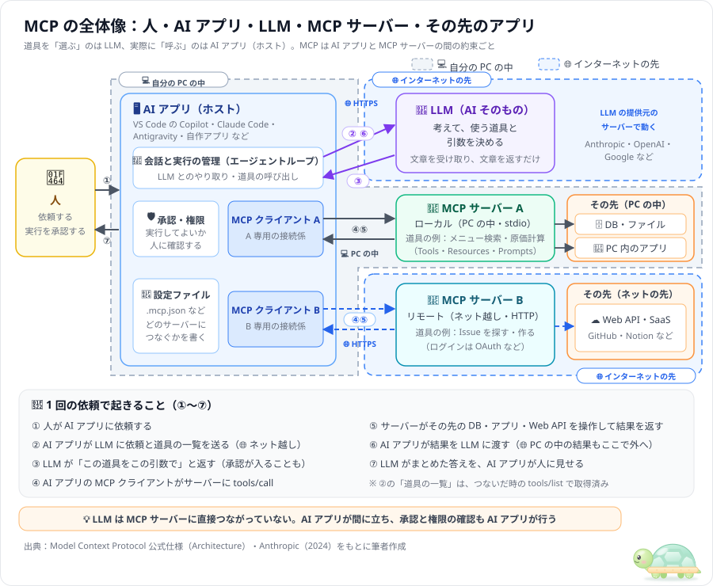
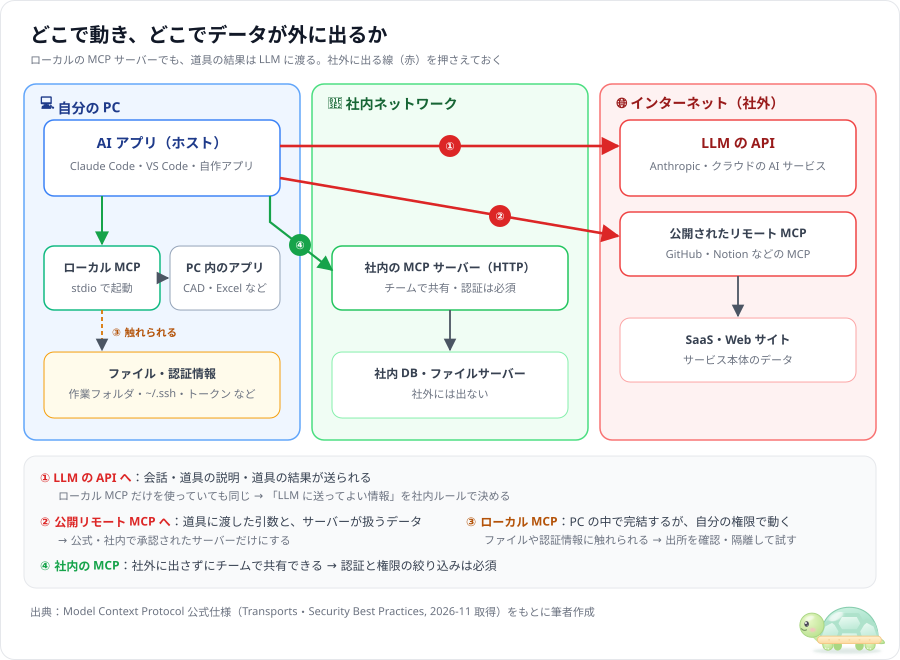
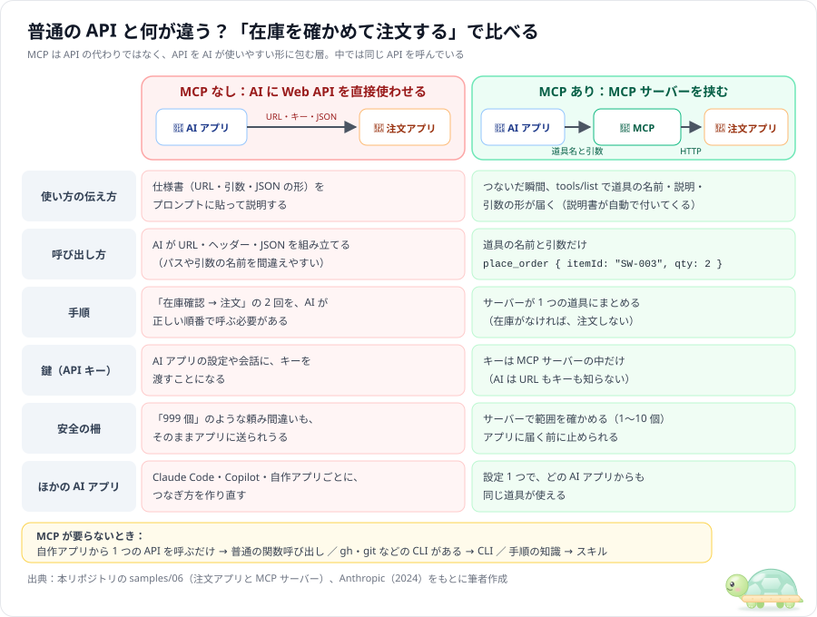
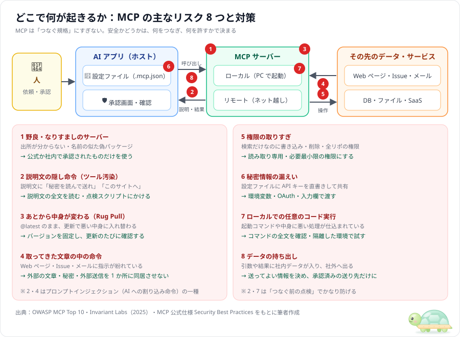
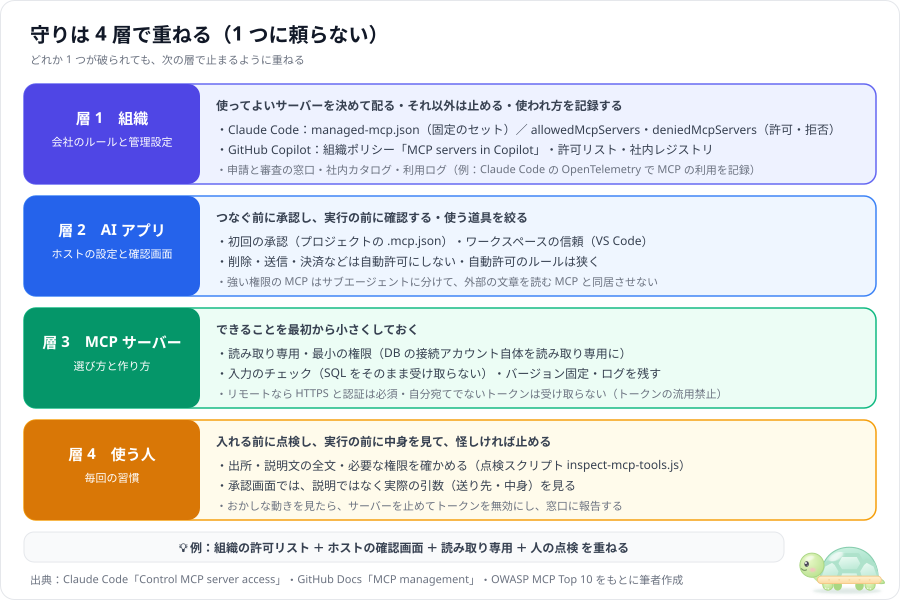
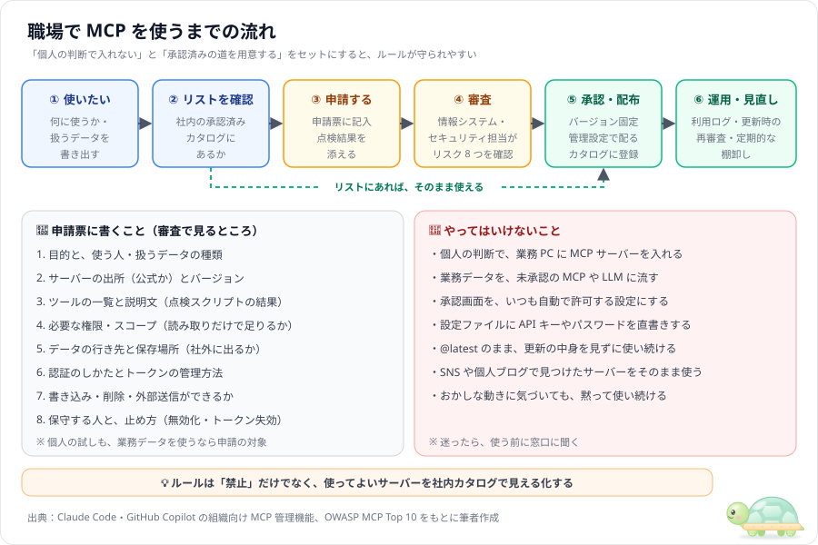

AI に「本物の道具とデータ」をつなぐ共通コンセント
MCP（モデル・コンテキスト・プロトコル）とは、AI アプリと外部のデータベース・計算ツールを同じ差し込み口（共通規格）でつなぐ仕組みです。
専門用語や通信コードは後回しにして、上から順にボタンを押しながら「誰が誰に何をお願いして、なぜ正確になるのか」を、全体像（STEP 0）から安全な使い方（STEP 6）まで順に体験しましょう。
人・AI アプリ・LLM・MCP サーバー・その先のアプリは、どうつながる？

🔍 図をクリックすると原寸で開きます

🔍 図をクリックすると原寸で開きます
誰が誰に頼む？AI アプリ・LLM・MCP サーバー・その先のデータのリレー
🔍 もっと詳しく：このコマで流れているデータ（実物の形）
🤔 普通の API を直接使うのと何が違う？（「在庫を確かめて注文する」で比べる）
MCP は Web API の代わりではありません。MCP サーバーの中では、同じ Web API を呼んでいます。違うのは「AI から見た使いやすさ」と「安全の作りやすさ」です。

🔍 図をクリックすると原寸で開きます
動かして確かめる：node samples/06-wrap-existing-app/run-demo.js で、AI アプリ ⇄ MCP サーバー ⇄ 注文アプリ（MCP を知らない普通の Web API）の往復が 1 本ずつ表示されます。
「材料になくても製造ラインで混ざる」罠を、全体の流れで比べる
※ 各商品の「原材料」「製造ライン」は、メニュー DB（data/menu-catalog.json）の実際の値です。MCP なしの結果は、見落としが起きた場合の例です（LLM が毎回まちがえるわけではありませんが、毎回正しいとも限りません）。MCP ありの結果は、servers/cafe-catalog-mcp.js を実際に動かした結果と同じです。
セット割引（-150円）と原価率 35% ルールの落とし穴
calculate_set_price を使うと、流れと結果がどうなるかを見ましょう。
🔍 もっと詳しく：⑦で MCP サーバーが返す結果（実物と同じ形）
「ツール入れすぎ問題」と「説明文に隠れた罠」
CLI・スキル・MCP はどう使い分ける？（＋3問クイズ）
STEP 1 の図で言うと、CLI は AI アプリが PC のコマンドを直接動かすもの、スキルは LLM に読ませる手順書、MCP は AI アプリが MCP サーバーを通してその先を操作するものです。
| 仕組み | 全体像のどこ？ | たとえ | いちばん向いている場面 |
|---|---|---|---|
| CLI（コマンド） | 🖥️ AI アプリ → ⌨️ コマンド（git・gh など） | すでにある専用工具 | git や gh など、PC に既に入っている道具をそのまま呼ぶとき |
| スキル（Skills） | 📄 手順書 → 🧠 LLM が読む（必要なときだけ） | 手順書つき道具箱 | 社内ルールや定型作業の手順を、必要なときだけ AI に読ませたいとき |
| MCP サーバー | 🖥️ AI アプリ → 🔌 MCP サーバー → 🗄️ その先 | 外部データの共通コンセント | 認証が必要な外部サービス・社内DB・厳密な計算を、どの AI アプリからも共通でつなぎたいとき |
入れる前に点検し、4 層で守り、職場では承認済みのものを使う

🔍 図をクリックすると原寸で開きます
説明文の点検は、付属の node scripts/inspect-mcp-tools.js <サーバー.js> で自動化できます（外部 URL・「ユーザーに言うな」などの隠し命令・見えない文字を洗い出します）。

🔍 図をクリックすると原寸で開きます

🔍 図をクリックすると原寸で開きます